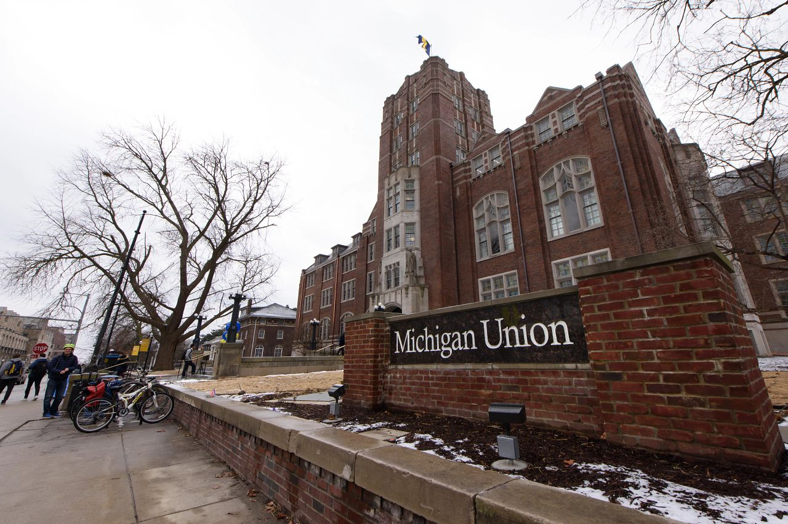
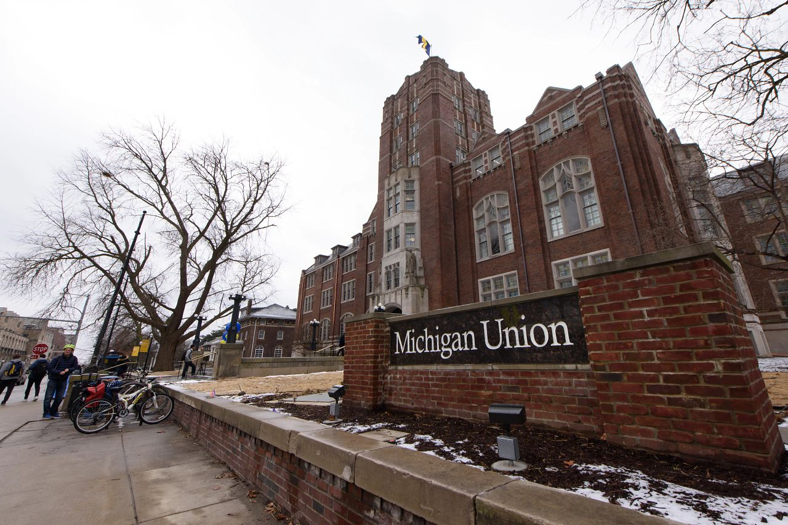

What is CAPS?
Counseling and Psychological Services (CAPS) provides a range of clinical, preventative, and training services consistent with the practices and standards of a nationally accredited university counseling center. CAPS is committed to creating a safe and supportive environment based on our multicultural, multi-disciplinary and multi-theoretical values and practices that allow our sectionerse student body to access care, to receive high quality services, and to take positive pathways to mental health.
All students are welcome to seek services at CAPS, whether you need emergency help or simply want to speak with one of our counselors
Services offered at CAPS:
-
Clinical Services
CAPS licensed therapists provide confidential clinical services. We strive to provide services in an inclusive atmosphere that is welcoming, comfortable, and multiculturally sensitive for all students.
call to action for booking appointment -
Crisis Services
CAPS clinicians are available for students needing immediate, same-day access to a mental health professional during our business hours.
Monday - Friday: 10am - 4:30pm
Front desk: (734) 764-8312
Location: 4th floor of Michigan Union (Central Campus office)
CAPS After Hours offers 24/7 support to any UM student or any person concerned about a UM student: (734) 764-8312 (Press 0)
-
Consultation
CAPS provides initial consultation services regarding mental health concerns. By identifying concerns early, we can better assist students by connecting them to appropriate services.
call to action for booking appointment -
CAPS Embedded
Your school affiliation at the University of Michigan has an embedded therapist to provide dedicated and tailored services for students in that school. Embedded therapists are familiar with the unique culture and demands of their specific academic units.
Find and contact your embedded therapist here